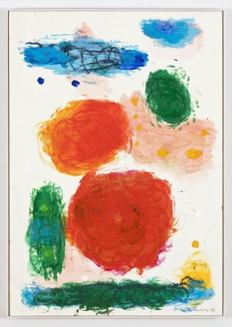
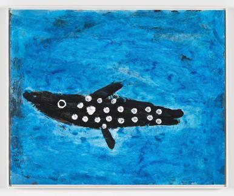

노은님
https://www.sunhyuk.com/
무엇을
>>자연은 무엇으로 구성되어 있는지, 이를 구성하는 힘은 어떻게 작용하는 것인지’에 대한 의구심을 화두로 삼아 그만의 작업 방식을 찾아나갔다. 생명의 시작이 그녀의 주제다.
어떻게
>>생명의 시작을 의미하는 점은 그의 회화에서 자주 등장하는 조형요소이다.
작가는 특유의 과감한 필획과 원색에 가까운 총천연색들로 고양이, 물고기, 새와 꽃 등의 자연물을 생생하게 그려내는데, 이들에는 모두 점이 찍혀 있다.
세상 만물은 물, 불, 흙, 공기의 4원소로 구성되어 있다는 고대 그리스의 자연철학자들이 주창한 4원소론이 각기 파란색, 빨간색, 밤색, 검정 또는 흰색으로 그의 회화에 나타난다.
왜
>>생명의 기운을 시각화한 것으로, 작가의 말에 따르면 점은 곧 눈(目)이다.
그는 어느 날 수족관에서 장님 물고기를 보고, 자신의 그림 속 생명체들에 눈이 없음을 깨달았다고 한다. 그 이후 작가는 눈을 그려 작품에 생명력을 부여했고, 이러한 점들이 모여 선이 되고, 선이 모여 노은님이 사랑해 마지않는 자연물들로 재탄생했다.
작가가 자신의 옷과 신발에 점을 찍고 이를 입는 것 역시 같은 맥락의 행동으로, 삶을 미술에 가까이, 그리고 생명력이 충만하도록 하기 위함이다.
마치 화룡점정의 순간과 같이 점을 찍어 생명력을 표현하는 것이다.
작가의 말
“참다운 예술은 진정한 순수함을 원한다. 모든 복잡함이나 기술을 떠나, 단순함이 남아 있을 때 예술은 살아난다”

- 노은님_무제 1998, Mixed media on paper, 100 x 70 cm

- 노은님_암초상어(Riffhai) 1990, Acrylic on paper, 45 x 55 cm